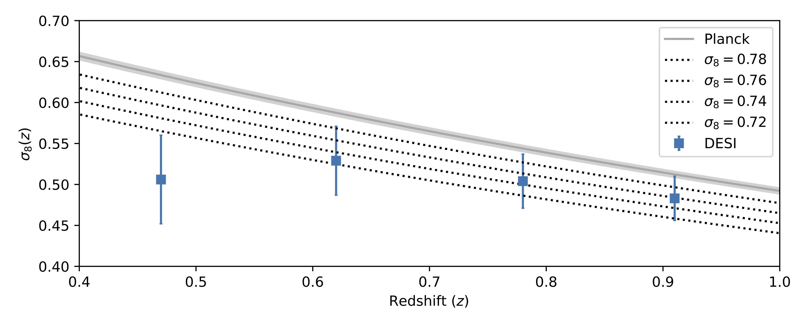
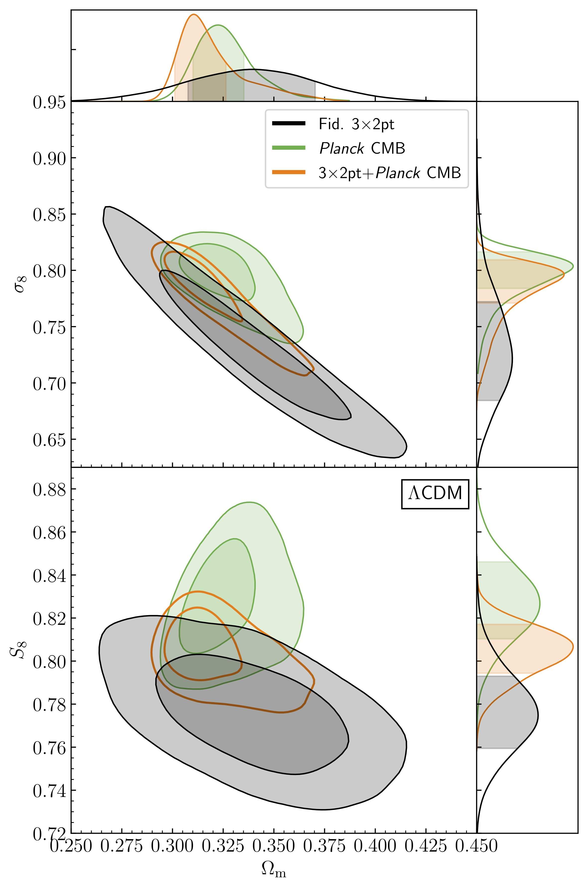
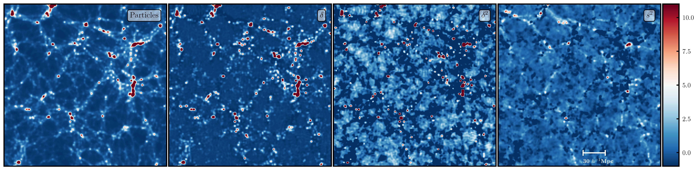
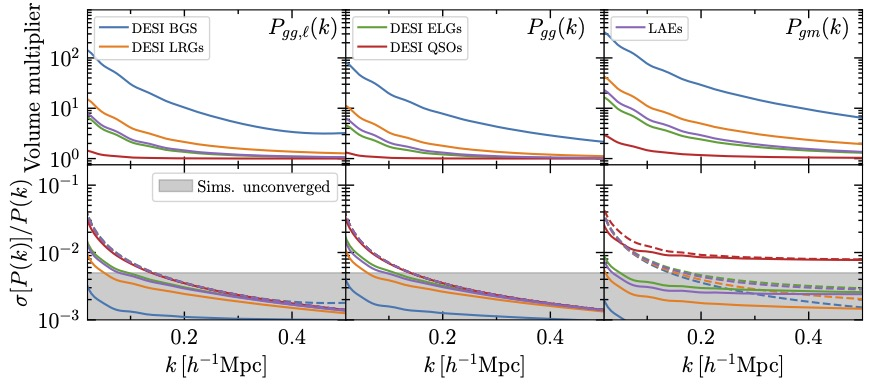
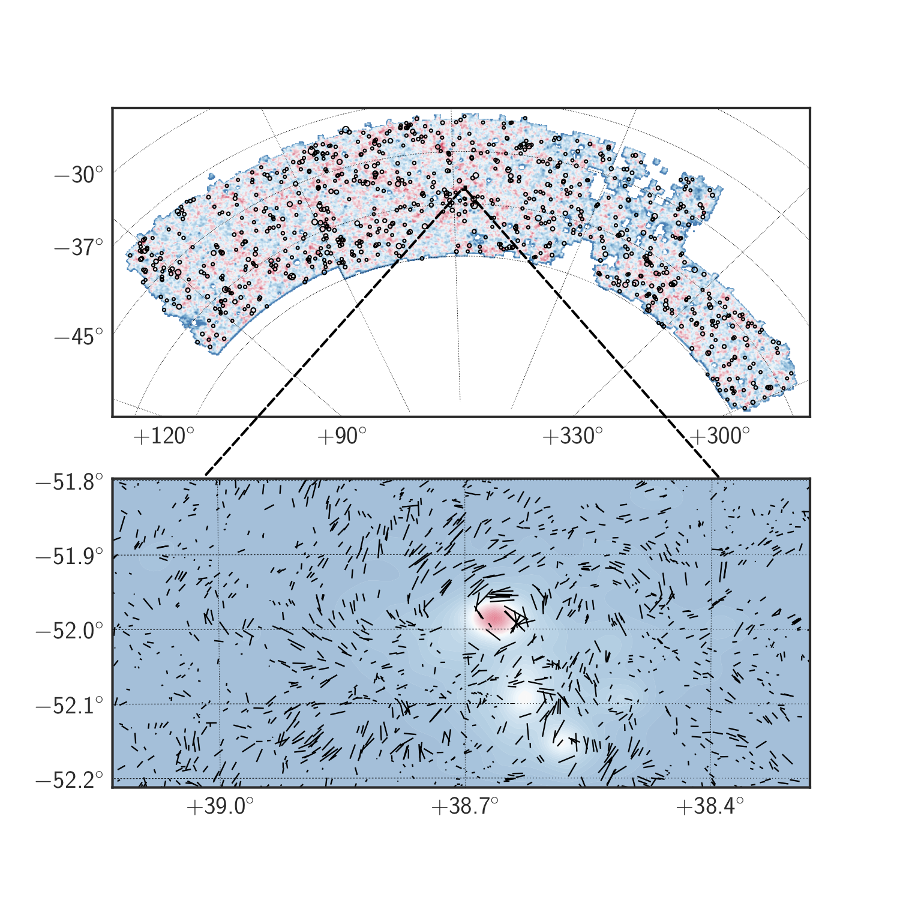

 DESI is mapping the three dimensional positions of tens of millions of galaxies over the next five years. I'm excited about the prospects of cross-correlating weak-gravitational lensing with DESI galaxies to provide a precise test of gravity on cosmological scales. We took a first step towards this goal with a recent analysis cross-correlating DESI galaxy positions with lensing measured by the Planck satellite.
 DES is a photometric galaxy survey designed deliver precision cosmological constraints by measuring weak-gravitational lensing via the correlated distortion of galaxy shapes. I have been heavily involved in many facets of the cosmological analyses of the first three years of DES data, resulting in some of the tightest constraints on the growth of cosmic structure to date.
 Historically, models for large scale structure have typically fallen into two categories: perturbation theory, or simulation based. Perturbation theory is inexpensive and flexibile, but is unable to model many scales of interest. Simulations are highly predictive, but are very expensive and may suffer from numerical artifacts. Along with collaborators, I am developing a new model that takes the best attributes from perturbation theory and simulations and combines them into a new framework called hybrid effective field theory. I recently released a public implementation of HEFT, including the effects of massive neutrinos that is now being applied to analyses in DESI, DES and ACT.
 One of the main issues plaguing the use of simulations in cosmology is the statistical uncertainty in simulation predictions due to the finite volumes of the cosmos that we simulate. People have played games in order to partially remove this uncertainty beginning almost at the time of the first cosmological simulations. Collaborators and I have devised a nearly optimal technique to remove this variance by making use of a statistical technique called control variates. We first run a full cosmological simulation, and pair this with a fast, Zel'dovich approximation simulation where we simply move particles in straight lines! This simple simulation is surprisingly correlated with the full simulation, and we can use this fact, along with our ability to analytically predict statistics under the Zel'dovich approximation, in order to remove as much statistical uncertainty as possible. This technique is already helping us improve our forward models in DESI, and we're just getting started!
 Cosmology is, by nature, a highly simulation dependent field. Breakthroughs are often made when new computing capability becomes available, enabling simulations that could not previously been run. Much of my work is focused on using modern data science techniques to create more realistic simulations, thus enabling new science with galaxy and cosmic microwave background surveys.